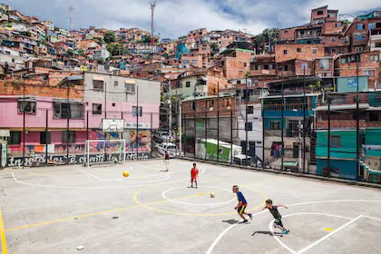

Essay · 16 May 2026
Los Cafeteros, the World Cup, and what football brings to Colombia
With the 2026 World Cup approaching and Colombia qualifying for the first time since 2018, I wanted to write something about football: not about injuries or alcohol, but about what the game gives people in a country still rebuilding after decades of conflict.
In Colombia, football is everywhere. I grew up watching it with my family, and I have always supported our national team, Los Cafeteros. The nickname means "coffee growers" and it became popular in the 1980s, when coffee was one of the things Colombia was best known for.
With the 2026 World Cup coming up and Colombia qualifying for the first time since 2018, the games will be on in our house in Wellington just like they will be in homes across Colombia.
So I wanted to write something about football and health.
Most public health writing about football focuses on things like injuries, alcohol use during tournaments, or violence linked to big matches. Those things matter, and there is good evidence on them.
But I want to focus on something different.
I want to think about what football gives people in Colombia after years of conflict, and how that can also be understood as public health.
It is not obvious at first, all the benefits football gives Colombia. It looks like children playing on dirt fields in small towns. But behind that, football has become part of how communities rebuild after decades of violence.

A very short version of the context
Colombia's armed conflict lasted more than fifty years.
The biggest armed group was the FARC, a left-wing guerrilla group that started in 1964. They fought the Colombian government for decades. Other groups were also involved, including paramilitary groups, drug cartels, and smaller armed groups.
At least 220,000 people were killed. Millions more were forced to leave their homes. Many moved into cities like Bogotá and Medellín.
Even today, Colombia still has one of the largest displaced populations in the world.
In 2016, the government and the FARC signed a peace agreement after years of talks in Havana. Many fighters laid down their weapons and began a process of returning to civilian life.
The peace deal is not perfect. Violence has not fully ended, and some new armed groups have appeared. But it still marked a turning point. Colombia today is not the same country it was twenty years ago.
What football is doing after the war
Football matters deeply in Colombia.
In one global survey before the 2014 World Cup, 94% of Colombians said they were interested in it: the highest of any country in the study.
That level of love really matters. It means football can reach people in places where other programmes often struggle to.
In Colombia, several organisations have built youth programmes around football for exactly this reason.
Two good examples are Tiempo de Juego and Colombianitos.
Tiempo de Juego works with thousands of young people in poorer areas of Bogotá, on the Pacific coast, and in northern Colombia. Football is the starting point, but the work goes further. It includes life skills, teamwork, gender equality, music, and arts.
They use a method called "football3". There is no referee in the usual sense. Before the game, players agree on the rules together. After the game, they talk about what happened. Points are given not just for goals, but also for fair play.
The idea is simple: the game itself becomes the learning space.
Colombianitos runs similar programmes at a larger scale, reaching tens of thousands of young people in areas affected by the conflict. Studies have shown changes in things like conflict resolution, communication, and life skills.
Both programmes work in the same way. Football is the reason to show up. The conversation around it is where the learning happens. The relationships are what make it last.
There are also more symbolic examples.
One is La Paz FC, a football team in Bogotá that brings together former FARC members, victims of the conflict, and people from affected communities. They play in the same team.
It is not really about winning matches. It is about what it means for people who were once on opposite sides of the conflict to now share the same field.
Why this is public health
When I talk about this with friends in Wellington, the question I often get is: is this really public health?
It depends how you define public health.
If you only mean hospitals and clinics, then no.
But if you mean improving the conditions people live in so they can be healthier over time, then yes.
Many of the young people in these programmes live in places with high levels of violence, poverty, school dropout, and mental health challenges. Some are displaced. Some have lost family members to war.
Traditional health services often do not reach them well.
Football does.
It gives young people a place to go, people to trust, and something structured to be part of. That alone can reduce exposure to violence and improve wellbeing.
Studies have also shown improvements in things like conflict resolution, social connection, and emotional coping.
None of this is dramatic on its own. But over time, it matters.
The Colombian government has also used sport in reintegration programmes, including hiring former FARC soldiers to run community sport activities. The idea is simple: give people work, purpose, and a role in their community again.
What the evidence says
It is important to be honest about the evidence.
There is good descriptive research on sport for development in Colombia, and growing evidence on social and behavioural outcomes. But it is still hard to measure long-term health impacts at a population level.
This is normal for this kind of work.
The effects are spread out, take time, and happen alongside many other changes in society.
We see similar challenges in other areas of public health, including indigenous-led programmes in other countries.
The main point is not perfect measurement. The point is that these programmes clearly do something meaningful for the people involved.
And the people running them understand something important about reaching young people that formal systems often miss.
That knowledge matters.
As the World Cup approaches
Colombia has qualified for the 2026 World Cup, returning after missing the last tournament.
When the games begin, they will be watched in living rooms across Colombia, and in our home in Wellington too.
But alongside the noise of the tournament, there will be small games bringing about positive change all over Colombia.
In small towns and city edges, children will still be playing football in programmes that have become part of how communities heal and rebuild.
The World Cup is loud.
These other games not quite so loud.
Both matter.
Final note
Football does not fix everything in Colombia. Nothing simple does.
But it does give people a shared space in places where shared spaces have not always been possible.
And for me, that is enough reason to think about it as something more than just a game.
~
Johanna Escudero Pino is a Wellington-based public health analyst. She holds a Postgraduate Diploma in Public Health from the University of Otago and has worked in Wellington dental practices since 2015.